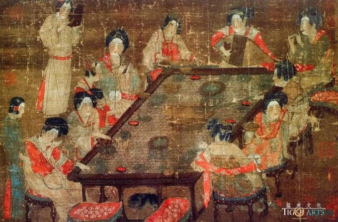

隋唐繁盛风俗成，两宋琐碎浮华生
隋唐时，茶叶多加工成饼茶。饮用时，加调味品烹煮汤饮。随着茶事的兴旺和贡茶的出现，加速了茶叶栽培和加工技术的发展， 涌现出了许多名茶，品饮之法也有较大改进。为改善茶叶苦涩味，开始加入薄荷、盐、红枣调味。此外，开始使用专门的烹茶 器具， 饮茶的方式也发生了显著变化，由之前的粗放式转为细煎慢品式。

公元780年左右，陆羽著成《茶经》，阐述了茶学、茶艺、茶道思想。这一时期由于茶人辈出，使饮茶之道对水、茶、茶具、煎 茶的追求达到一个极尽高雅、奢华的地步，他更倡导的是细煎慢品式的煎饮法。这种煮着方式和方法具有四个特点： 1. 先把水烧开，加入盐后，再放入茶末，也就是在同一只鍑内先烧水，后煮茶，这是加盐的茶。 2.水分为三沸，是以水的气化现象，即以鱼目，连珠，鼓浪来分的，也就是明代张源《茶录》中所说的“形辨。因为鍑是没有盖的，这样才能形辨，通过水的变化来感知沸腾的程度。 3.十分注意沫饽的孕育和每碗沫饽的均匀，在第二沸时酌出一瓢水，在第三沸时酌出一瓢“隽永”，都是为达到这一目的而服务的。 4.酌茶是在茶汤沸腾的时候进行的，茶滓随着沸水翻腾，舀入碗中的茶，有沫饽，有茶汤，有茶滓。 唐代不只对饮茶方式作出了重大改变，更是全民饮茶。在这样一个诗的国度里，茶开始从引用层面上升到了精神层面。
唐代的饮茶习俗蔚然成风，对茶和水的选择、烹煮方式以及饮茶环境越来越讲究。皇宫、寺院以及文人雅士之间盛行茶宴，茶宴的 气氛庄重，环境雅致，礼节严格，且必用贡茶或高级茶叶，取水于名泉、清泉，选用名贵茶具。盛唐茶文化的形成，与当时佛教的 发展、科举制度、诗风大盛、贡茶的兴起、禁酒等等均有关联。茶文化盛极一时相关的贡茶制度也开始完善，大唐贡茶院位于浙江 省长兴县顾渚山侧的虎头岩。始建于唐大历五年。他是督造唐代贡茶顾渚紫笋茶的场所。也可以说是由史可基的中国历史上首座茶 叶加工厂。
到了宋代，茶文化继续发展深化，形成了特有的文化品位。宋太祖赵匡胤本身就喜爱饮茶，在宫中设立茶事机关，宫廷用茶已分等 级。至于下层社会，平民百姓搬家时邻居要“献茶”;有客人来，要敬“元宝茶”，订婚时要“下茶”，结婚时要“定茶”。在学术 领域，由于茶业的南移，贡茶以建安北苑为最，茶学研究者倾向于研究建茶。在宋代茶叶著作中，著名的有叶清臣的《述煮茶小品》、 蔡襄的《茶录》、朱子安的《东溪试茶录》、沈括的《本朝茶法》、赵佶的《大观茶论》等。

宋代是历史上茶饮活动最活跃的时代，由于南北饮茶文化的融合，开始出现茶馆文化，茶馆在南宋时称为茶肆，当时临安城的茶饮 买卖昼夜不绝。此外，宋代的茶饮活动从贡茶开始，又衍生出“绣茶”“斗茶”“分茶”等娱乐方式。如下为点茶的具体过程：
点茶先要用纸将茶饼包好捶碎，再用碾子磨成细末，然后用茶罗筛。茶膏
筛出来的茶末放进茶盅，加沸水少许调成茶膏。茶汤
茶膏调匀，再用沸水冲成茶汤。汤花
泡沫叫汤花，也叫云脚，要求鲜亮雪白，到达苏轼所称“汤发云腴酽白，盏浮花乳轻圆”的效果。 茶香飘逸，汤花轻溅，水雾朦胧。